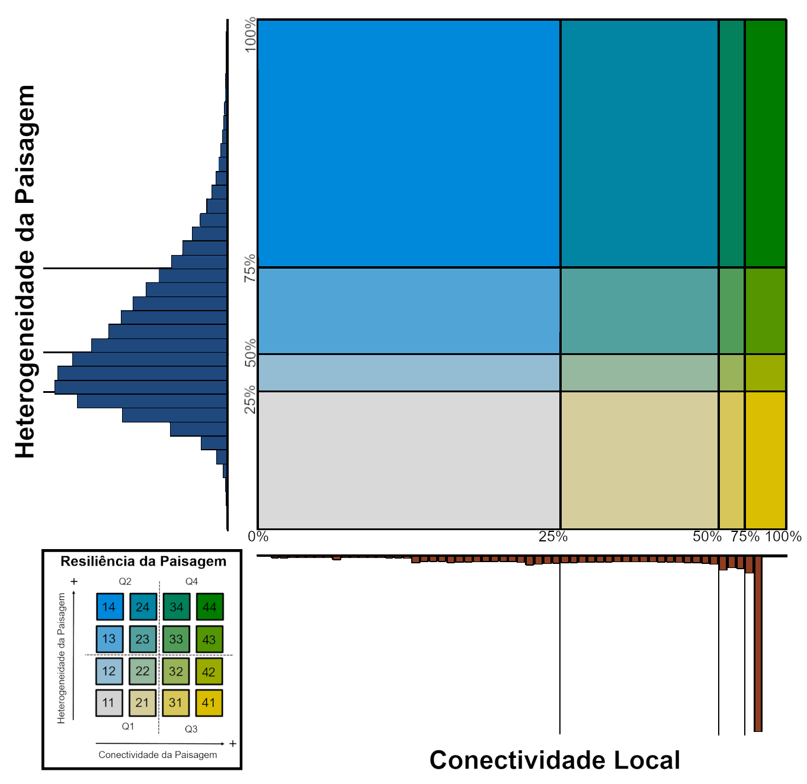

13 Resiliência da paisagem
A resiliência da paisagem é a capacidade de um determinado local em manter a diversidade de espécies e as funções ecossistêmicas mesmo diante das pressões provocadas pelas mudanças climáticas. Para calcular a resiliência da paisagem, utilizamos a camada de heterogeneidade da paisagem e de conectividade local (Figura 13.1) descritas anteriormente.
A partir dessas duas camadas, classificamos as imagens em quartis baseados no histograma de distribuição dos valores dessas métricas (Figura 13.2).

Com a sobreposição das duas imagens classificadas por quartis, geramos uma combinação de classes (11 - 44) para a resiliência da paisagem, que tem como objetivo mostrar as áreas onde os resultados das duas métricas se sobrepõem ou divergem, baseado na escala de cor escolhida (Figura 13.2). Essas classes podem ser agrupadas em quatro quadrantres: quadrante Q1 - classes 11, 12, 21, 22; quadrande Q2 - classes 13, 14, 23, 24; quadrante Q3 - classes 31, 32, 41, 42; e quadrante Q4 - classes 33, 34, 43, 44, indicando tanto menor (Q1) e maior (Q4) resiliência, quanto maior efeito das camadas de heterogeneidade da paisagem (Q2) e de conectividade local (Q3) isoladamente.

Importante mencionar que a avaliação da resiliência da paisagem foi realizada apenas para ambientes terrestres, não sendo avaliada a resiliência de ambientes aquáticos. Portanto, para gerar o mapa final de resiliência os corpos d’água e outros ecossistemas aquáticos foram mascarados do resultado final, não sendo classificados portanto como nenhuma classe de resiliência da paisagem. Esse procedimento foi realizado através da sobreposição das classes de água do MapBiomas Água, indicando os corpos d’água como no data.
A partir da combinação dessas imagens, geramos um mapa bivariado da resiliência da paisagem (Figura 13.3), que destaca, em verde, as áreas com maior resiliência da paisagem, i.e. que apresentam maiores valores de heterogeneidade da paisagem e de conectividade local, e que consequentemente apresentam maior variabilidade microclimática e maior potencial para movimentação aos organismos na paisagem.

As diferentes classes criadas pela sobreposição dos quartis na escala bivariada da resiliência da paisagem nos permite identificar diferentes áreas de interesse (Figura 15):
- Áreas em verde (quadrante Q4): são aquelas que apresentam os maiores valores para as duas métricas, ou seja, possuem alta conectividade local e alta heterogeneidade da paisagem. Isso sugere que essas áreas são particularmente resilientes, pois apresentam alto potencial de manter a diversidade de espécies e funções ecossistêmicas, mesmo diante das mudanças climáticas;
- Áreas em amarelo (quadrante Q3): apresentam um alto grau de conectividade local, indicando que os elementos do ecossistema estão bem interligados nessas regiões. No entanto, essas áreas exibem baixa heterogeneidade da paisagem, sugerindo que a variação topográfica da paisagem é limitada;
- Áreas em azul (quadrante Q2): possuem alta heterogeneidade da paisagem, o que significa que há uma grande variedade de tipos de habitats ou características na paisagem. No entanto, a conectividade local é baixa, o que indica que os elementos do ecossistema podem estar isolados ou menos interligados;
- Áreas em cinza (quadrante Q1): são as áreas com menores valores de heterogeneidade da paisagem e menores valores de conectividade, indicando locais que apresentam pouca variação topográfica e, consequentemente, baixa variedade de habitats. Essas áreas também apresentam uma baixa conectividade, o que indica que esses microhabitas estão isolados ou pouco interligados.